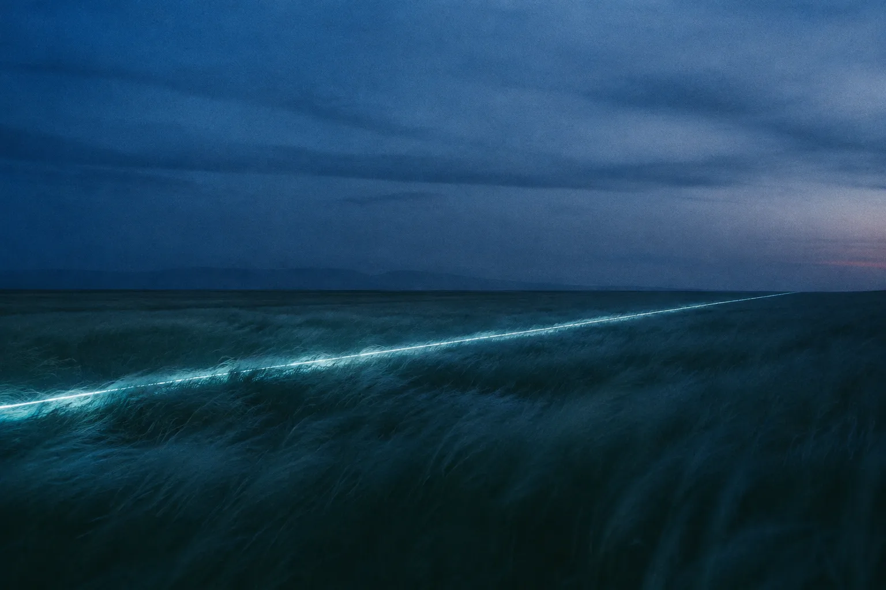

「誰かの役に立つ」という営みの中で、これまで人間が担ってきた“考えること”や“実行すること”の一部が、いま急速にAIへと置き換わりつつあります。変化の激しさが増し続けるこの時代において、マクロな視点では人間らしさを、ミクロな視点では自分らしさを保ちながら、どう生き残っていくべきか。私たちはその問いを日々考え続けています。
01ストーリー
「誰かの役に立つ」という営みの中で、これまで人間が担ってきた“考えること”や“実行すること”の一部が、いま急速にAIへと置き換わりつつあります。変化の激しさが増し続けるこの時代において、マクロな視点では人間らしさを、ミクロな視点では自分らしさを保ちながら、どう生き残っていくべきか。私たちはその問いを日々考え続けています。
01AIは高い合理性をもって答えを返しますが、一方、その合理性は、前提となるプロンプトや、使う人それぞれの立場や経験、価値観に大きく左右される構造にあります。つまり、ひとつの正解に収束するのではなく、無数の“もっともらしさ”が生まれ続け、エントロピー増大の法則が文字通り起きている時代に入ったと捉えています。
02
Web上でも、AIによって膨大な情報やコンテンツが生成される時代になりました。そうした環境のなかで重要になるのは、何が本質的なシグナルで、何が一時的なノイズなのかを見極める力だと考えています。
03では、
年収・地位・資産など上下の相対比較で幸福度を測るゼロサムゲームと、成長・信頼・創造など一緒に何かに取り組むことで幸福が生まれるプラスサムゲームとの視点から様々な事象を捉えた際、創業時に掲げた「笑顔の総量の最大化」を軸に置くと判断基準は明確になると考えています。
05
短期的な個別最適ではなく、長期的な全体最適へ。利己を求めることと、利他に生きることがタイムラグを経て同義になるという仮説を検証すべく、今後も地道に、泥臭くをコアバリューとして事業を運営してまいります。
06ご興味をお持ちいただけた方はぜひご一報いただければ幸いです。
CONTACT →07